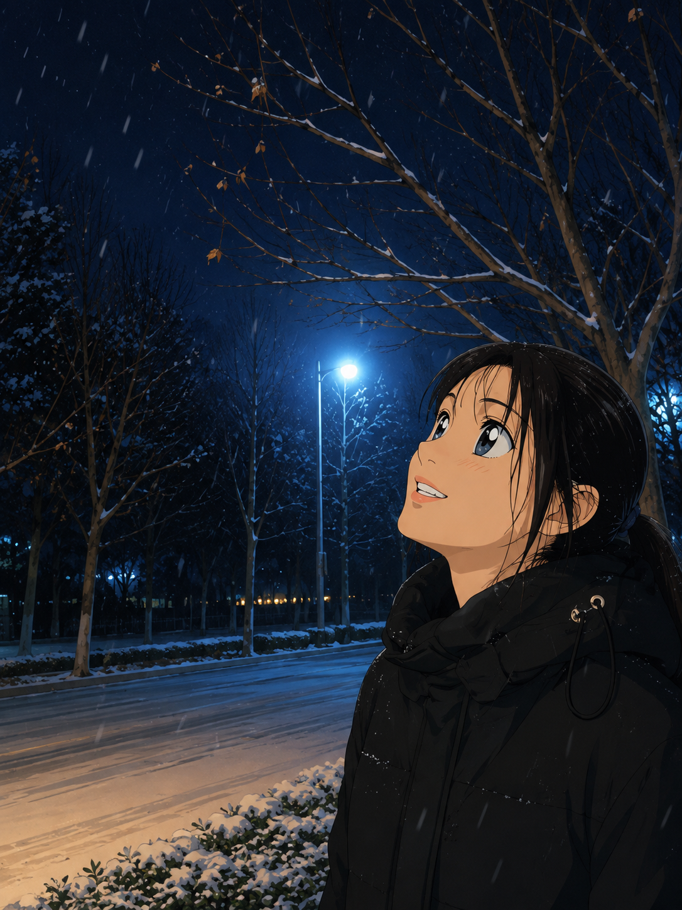

HEE BOH YEE
Bello, it's me, Boh Yee 'v' ! I'm a 2008-born teen from Malaysia, currently living in Selangor: a state right beside the capital. My hometown is especially famous for its Satay (those delicious grilled meat skewers烤肉串!).
Right now, I'm a Year-2 student majoring in Computer Science and Technology at Beijing Institute of Technology. I picked up some HTML and CSS back in secondary school, which gave me a basic taste of software engineering. But years have passed, and the level of difficulty has definitely ramped up, I've found myself struggling quite a bit when trying to build a game on my own. Luckily, I've met some amazing teammates along the way who've guided me through this programming journey. As for JavaScript? I've never touched it before, so one of my biggest hopes for this mini-semester course is to finally build a solid foundation in it.
Outside of class, I'm actively involved in student associations namely MBIT (Malaysian Student Association at BIT) and AMSIB (Association of Malaysian Students in Beijing). Being part of these communities is something I'm truly proud of, as it gives me the chance to support and assist my fellow compatriots abroad.
My hobbies are a little different from the usual. I love creating meaningful, aesthetic content that can inspire or guide others through tough moments. I'm also passionate about volunteering: whether it's for school events, community activities, or even government-organized programs, it always leaves me feeling fulfilled.
And yes, I love eating. I've proudly downed three bowls of rice in one meal, twice a day, and honestly, I take great pride in breaking the silly stereotype that women eat less. On a more reflective note, I'm deeply drawn to poetic writing and expressing emotions through words. I tried my hand at it last year and ended up winning First Place in a Chinese National Writing Competition. That moment of recognition lit a fire in me and made me even more passionate about this art.
This is my very first time taking part in a detective game project, and I had heard of Conan since I was little. I truly hope this game can mark a beautiful beginning to my software engineering journey. In our team, I serve as both CIO and Designer: roles that fit naturally with my strengths, whether it's handling documents, writing, or building game visuals. I'm really looking forward to making this a vibrant and memorable start to my Year 2 adventure.
ROLE
CIO, Designer
MAIN TASKS
Documentation, Communicaition, Asset Management
CONTRIBUTION
Manage project timeline and milestones, Design characters, backgrounds, and UI